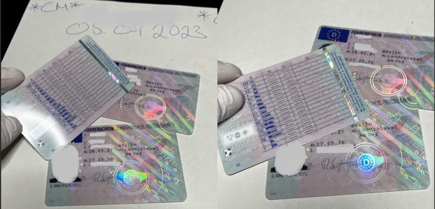
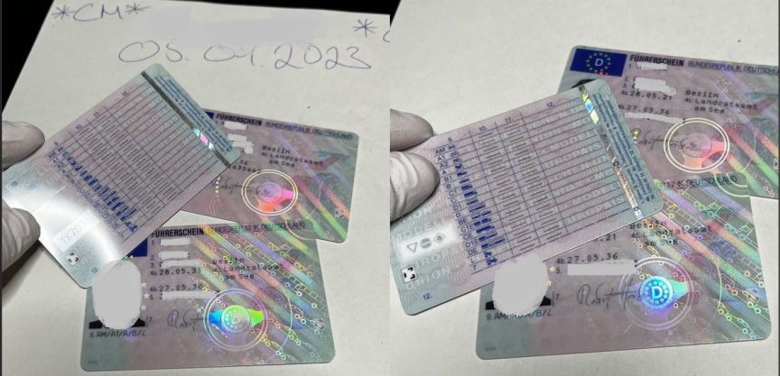

German Counterfeit Documents Vendor Busted
~2 min read | Published on 2023-09-14, tagged Arrested, Counterfeits, Darkweb-Vendor using 255 words.
Authorities in Germany arrested a 36-year-old man suspected of forging identity documents and selling them through the dark web.

The Cologne public prosecutor announced that the suspect was arrested following months of investigations that revealed he was involved in the production and sale of "very high-quality" counterfeit documents through an undisclosed dark web marketplace.
The federal police in Halle launched investigations into the 36-year-old's counterfeiting operation in December 2022. The investigation revealed that the suspect was producing and selling fake German identity cards and driving and boat licenses.
The price of each document allegedly ranged between 350 and 1,000 euros. The quality of the counterfeit increased with the price. The high-quality ones were reportedly so good that they were hardly detected.
During the investigations, the investigators linked the suspect to the sale of 19 counterfeit documents. They, however, suspect he sold a significantly higher number of the documents in that period.
On September 5, 2023, the investigators executed search warrants at three apartments associated with the 36-year-old. The searches led to the discovery of a fully equipped counterfeit documents printing shop and the seizure of equipment such as a laser engraving machine, a vacuum press, and printers.
The investigators also found and seized storage devices and several smartphones and computers. An undisclosed number of fake documents were found and seized. The suspect was arrested at the end of the searches.
On September 13, the investigators executed search warrants at the residences of four men suspected of having ordered counterfeit documents from the 36-year-old.

The fake identity documents made by the suspect
The Cologne public prosecutor announced that the suspect was arrested following months of investigations that revealed he was involved in the production and sale of "very high-quality" counterfeit documents through an undisclosed dark web marketplace.
The federal police in Halle launched investigations into the 36-year-old's counterfeiting operation in December 2022. The investigation revealed that the suspect was producing and selling fake German identity cards and driving and boat licenses.
The price of each document allegedly ranged between 350 and 1,000 euros. The quality of the counterfeit increased with the price. The high-quality ones were reportedly so good that they were hardly detected.
During the investigations, the investigators linked the suspect to the sale of 19 counterfeit documents. They, however, suspect he sold a significantly higher number of the documents in that period.
On September 5, 2023, the investigators executed search warrants at three apartments associated with the 36-year-old. The searches led to the discovery of a fully equipped counterfeit documents printing shop and the seizure of equipment such as a laser engraving machine, a vacuum press, and printers.
The investigators also found and seized storage devices and several smartphones and computers. An undisclosed number of fake documents were found and seized. The suspect was arrested at the end of the searches.
On September 13, the investigators executed search warrants at the residences of four men suspected of having ordered counterfeit documents from the 36-year-old.